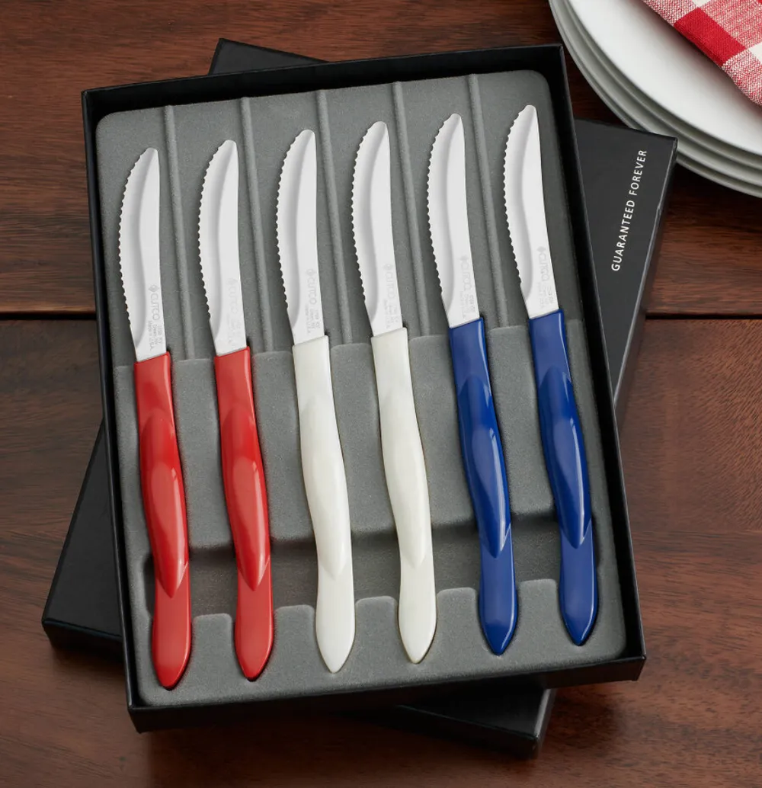

CUTCO is the world's finest set of Cutlery! We have been producing top-quality, American-made knives since 1949. Our knives are cutting-edge (literally), and are well-renowned throughout the world. Our products offer unrivaled quality, as well as service and guarantee. Do you know of any other company whose products have a forever guarantee that goes from generation to generation! Yep! That means if your grandkids have your CUTCO, they can always get them replaced and guaranteed! Our products are known to last for a very long time, being able to go unsharpened for up to 10 years. And, above all, you have me, your personal kitchen shopping assistant. We offer unrivaled quality to all our CUTCO customers, big and small!
You can always buy CUTCO in stores, but you aren’t guaranteed the same deals that you are through our sales reps. When working with me or our other sales reps, you get an automatic discount on all of our sets. What’s more, we can give you free deals on many more of our products, as well as many unique additional bonuses and discounts! And, regardless whether you buy anything from us or not, I guarantee one thing when you demo with me–it will be FUN! If I am not the highlight of your day, then please ask for a refund (haha).
I am a proud member of the Vector marketing team and of Lindsey Pollnow’s office in St. Charles & St. Louis. Our office sold the top amount of CUTCO this year, grossing nearly $1.5 million dollars!! We have a really positive and awesome work culture. Lindsey helps lift us up and encourages us to focus on gratitude and self-growth. We often help each other be accountable to our work and personal goals, from demos to workouts. We are truly a family in the St. Charles office and we bring that energy and confidence to our customers! If you have any further questions before, during, and after our demo, always feel free to reach out to Lindsey Pollnow. She is awesome!
CUTCO has many deals that go throughout the year. For example, we have memorial day, Christmas, and New Year deals. We also have exclusive product lines that go out for special occasions, such as our red, white and blue knife sets celebrating America through the Fourth of July. During these times you can get very special deals through me and our sales reps, so if you are putting off CUTCO for now, these times are GREAT to buy!
